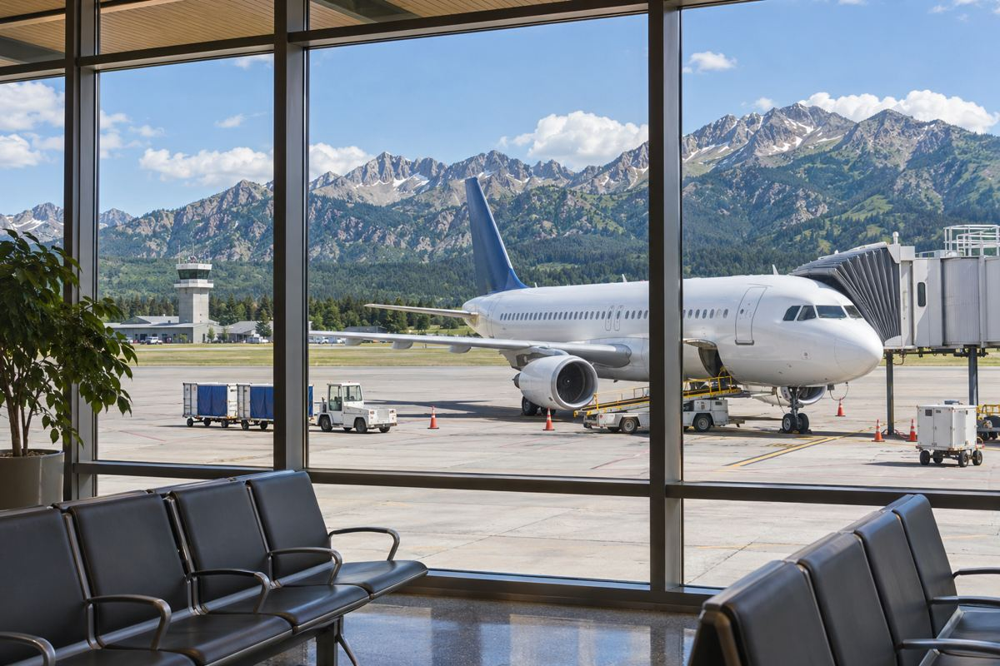

항공 / EXPLAINED
델타, 2027년 여름 주말편 확대…오스틴·LA에서 산악 도시 연결
노선별 시작일과 종료일이 다르고, 기존 노선에 주말편을 추가하는 구간도 있다.

델타항공이 11월 6일 발표한 2027년 여름 일정에 오스틴–캘리스펠, 로스앤젤레스–잭슨홀 등 주말 시즌편이 추가됐다. 두 노선의 공지상 운항 기간은 2027년 6월 12일부터 9월 4일까지다. 출발지에 따라 다른 노선은 5월부터 시작하거나 10월까지 이어진다. 11월 6일 공개한 내용은 여름 시간표 발표이며, 각 노선의 첫 운항은 내년 일정이다.
델타는 미국 여러 허브에서 국내선과 국제선을 잇고, 일부 구간은 지역 항공사 브랜드인 델타 커넥션으로 운항한다. 여름 시즌편은 수요가 집중되는 기간과 요일에 좌석을 배치하는 방식이다. 이번 발표에서 오스틴은 캘리스펠과 보즈먼, 로스앤젤레스는 보즈먼과 잭슨홀이 새로 제시됐다. 같은 산악권 여행이라도 어느 공항으로 도착할지에 따라 마지막 지상 이동이 달라진다.
발표에서 애틀랜타발 뱅고어와 트래버스시티, 래피드시티는 5월 29일에 시작한다. 종료는 각각 10월 24일, 9월 6일, 9월 4일로 다르다. 디트로이트발 뱅고어는 6월 12일부터 10월 23일까지로 제시됐다. 같은 ‘여름 노선’이라는 이름 아래에도 운항 기간의 차이가 있다. 왕복 여행이라면 가는 날짜에 편이 있는지뿐 아니라 돌아오는 날짜가 시즌 안에 들어오는지 확인해야 한다.
한편 기존 노선에 주말 운항을 한 차례 더 편성하는 변화도 있다. 예를 들어 신시내티–올랜도와 신시내티–포트마이어스는 4월 17일부터 9월 4일까지 추가 빈도가 안내됐다. 중남미와 카리브해에서는 토요일 추가편과 일부 시즌 연장을 함께 발표했다. 노선에 항공편이 하나 더 생긴 경우와 해당 계절에 새로 직항을 편성한 경우는 여행자가 체감하는 변화가 다르다.
국제선에서 갈아타는 독자에게는 연결 가능성이 시간표의 핵심이다. 미국행 장거리편이 늦게 도착하면 같은 날 지역 공항으로 넘어가는 주말편을 이용하기 어려울 수 있다. 편집부는 가까운 목적지 공항을 고를 수 있다는 장점이 주말에 여행을 시작하거나 마칠 수 있는 사람에게 더 클 것으로 본다. 다른 요일의 기존 경유편과 공항 접근 비용을 함께 봐야 일정 전체가 얼마나 달라지는지 알 수 있다.
시즌에 맞춰 지방 공항으로 바로 가는 일정은 환승 횟수를 줄일 수 있지만, 비행기에서 내린 뒤 이어지는 교통이 같은 시간대에 운행하는지는 별도다. 예를 들어 토요일 저녁에 도착하는 일정이라면 렌터카 영업시간이나 숙박시설 체크인 시간이 여행 시작에 영향을 준다. 반대로 더 큰 공항으로 들어가 차를 오래 타는 대안은 항공편 선택이 넓을 수 있다. 특정 노선의 출발 요일과 시각이 자료에 없을 때에는 장거리편과 숙박을 먼저 고정하기보다, 여름편이 검색되는 날짜를 확인한 다음 동선을 맞추는 편이 합리적이다.
회사 자료는 델타 본편과 델타 커넥션 운항이 섞인다고 설명했다. 구간별 고정 기종과 좌석 수, 날짜별 실제 운임은 발표에 한꺼번에 제시되지 않았다. 예약할 때 운항사 표기와 수하물 조건, 연결 시간, 왕복 날짜를 함께 확인하는 게 좋다. 공지에 적힌 시작일과 실제 첫 편의 운항 결과는 시점이 다르며, 후자는 시즌이 시작된 뒤 확인할 수 있다.